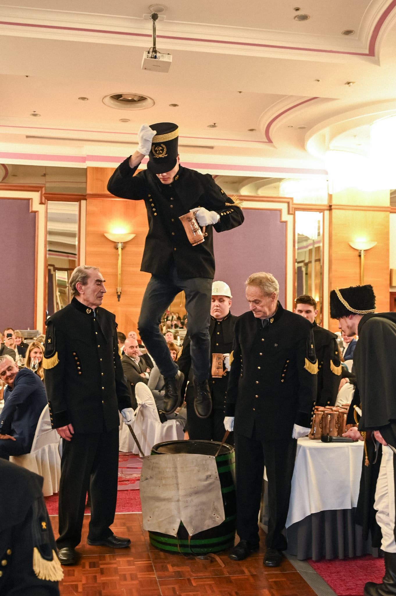
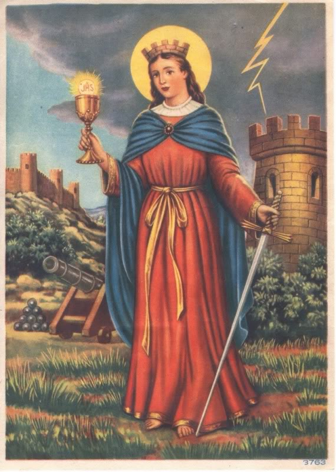
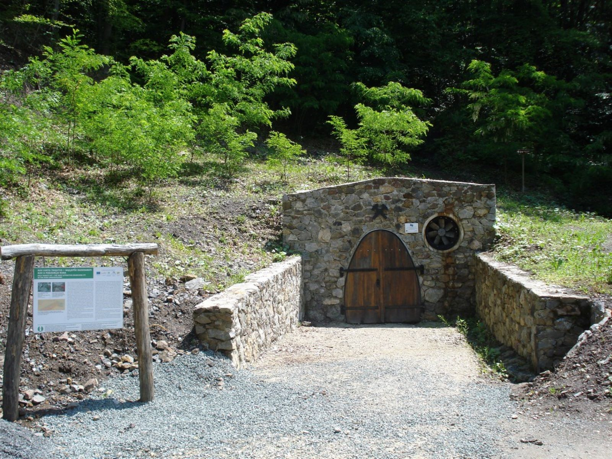
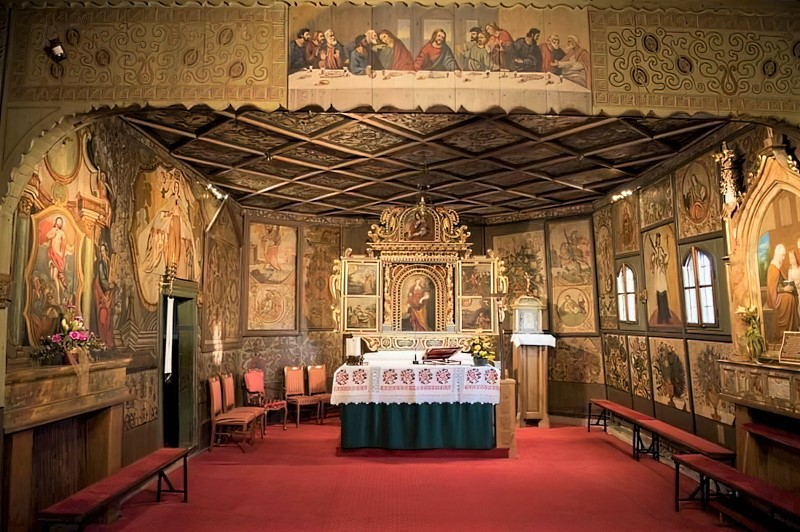
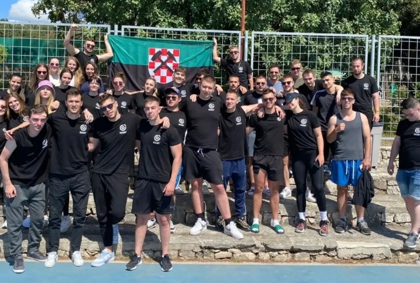
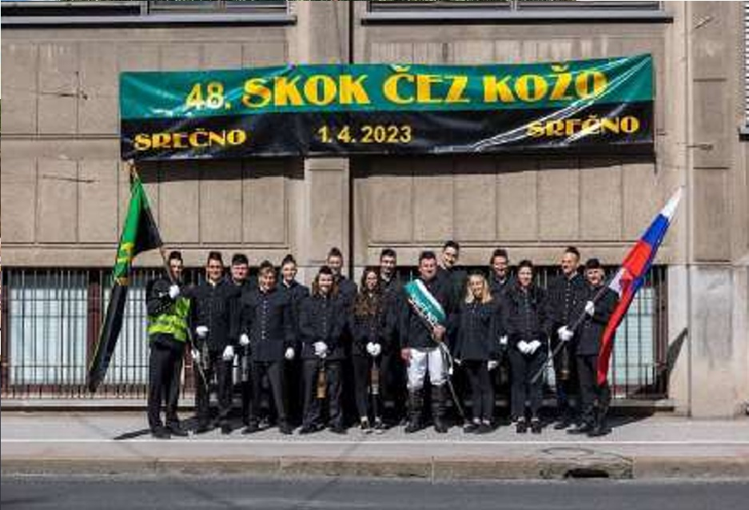
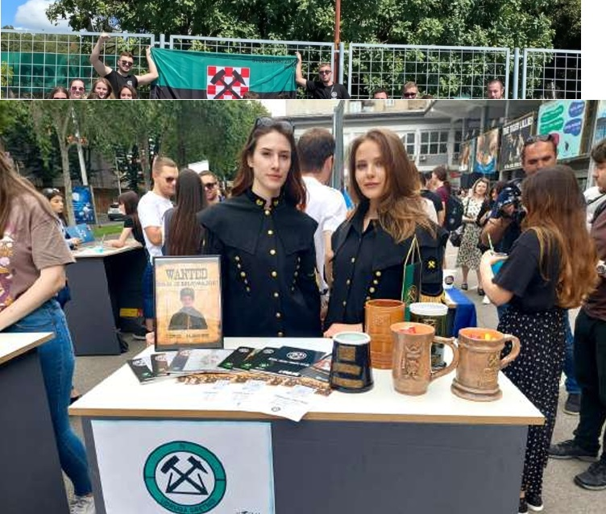

Tradicionalni ceremonijal povodom Dana svete Barbare, zaštitnice rudara, geologa i naftaša. Svečano prima brucoše Rudarsko-geološko-naftnog fakulteta u časni rudarski stalež, a održava se svake dvije godine. Ova je godina godina Skoka.
Udruga „Sretno!” osnovana je 1998. godine i okuplja sadašnje i bivše studente Rudarsko-geološko-naftnog fakulteta Sveučilišta u Zagrebu. Njezina je zadaća očuvanje i promicanje rudarske tradicije i kulturne baštine te jačanje osjećaja zajedništva i pripadnosti.
Naša uloga
Udruga organizira tradicionalnu manifestaciju Skok preko kože na dan svete Barbare, zaštitnice rudara. Uvježbavanje brucoša za primanje u rudarski stalež i cjelokupni ceremonijal vode članovi Udruge. Skok i rad Udruge rezultat su predanog truda studenata, djelatnika fakulteta i drugih istaknutih članova.
Veza mladih i starih bajti
Skok mladim i starim bajtama omogućuje druženje, obnovu kontakata s kolegama i prisjećanje na dane kada su i sami bili sudionici. Svečane crne odore sa zlatnim amblemima i 28 zlatnih gumbi predstavljaju rudarstvo, geologiju i naftaštvo kao jednu veliku obitelj.
Zahvala
Zahvaljujemo svim pokroviteljima, sponzorima i donatorima čija pomoć uvelike doprinosi održavanju manifestacije. Posebnu zahvalnost dugujemo Rudarsko-geološko-naftnom fakultetu na kontinuiranoj podršci.
Udruga ukratko
Osnovana
1998.
Sjedište
RGN fakultet, Pierottijeva 6, Zagreb
Predsjednik Udruge
Filip Božić, mag. ing. petrol.
Ritam Skoka
svake dvije godine
Posljednji Skok
XXXV., 6. prosinca 2024.
Sljedeći Skok
XXXVI., 5. prosinca 2026.
Drevni rudarski pozdravSRETNO!
02Ritual primanja novih rudara
Skok preko kože

Brucoš s bačve skače preko rudarske kože, izgovara svoje životno geslo i ispija kriglu piva pod budnim okom ispitivača.
Što je Skok
Skok preko kože tradicionalni je ceremonijal koji se održava povodom Dana svete Barbare (4. prosinca), zaštitnice rudara, geologa i naftaša. Simbolizira svečani prijem brucoša u častan rudarski stalež, a održava se svake dvije godine. Ove je godine godina Skoka.
Proslava ne obuhvaća samo ulazak u rudarski ceh, nego i obilježavanje dana naše zaštitnice. U vrijeme svete Barbare rudarske pjesme odjekuju zagrebačkim ulicama, a prolaznici pozdravljaju studente u svečanim crnim odorama sa zlatnim amblemima. Biti dio Skoka znači biti dio jedne obitelji, bez obzira je li netko rudar, geolog ili naftaš: svi smo dio opasnih zanimanja, i upravo zato slavimo svoju zaštitnicu.
Rudarsko-geološko-naftni fakultet jedini je fakultet s manifestacijom takve dugovječnosti, koja je postala dio tradicije i samog grada Zagreba.
Podrijetlo i povijest
Mnogi misle da rudarstvo traži više tjelesnog rada nego znanja. No rudar mora biti iskusan, poznavati stijenu i zakonitosti podzemlja. S vremenom su rudari dobili povlastice, pravo slobodnog putovanja, nošenja oružja, lova i ribolova, a rad u oknu postao je zanimanje slobodnih i visoko cijenjenih stručnjaka.
Da bi postao majstor, rudar je morao proći razdoblje šegrtovanja i položiti ispit. Vrhunac svečanosti bio je skok preko rudarskog okna, kojim je kandidat pokazivao spretnost i odvažnost, dvije osobine bez kojih se u rudarskom pozivu ne može opstati. Kada su okna s razvojem rudarske tehnike postala preširoka, umjesto skoka preko okna uveden je skok preko kože. Koža je neophodan dio radne odjeće rudara: ima oblik pregače, ali se pripasuje straga kako bi se rudar, sjedeći na njoj, mogao spuštati niz kose hodnike do radnog mjesta.
Prvi Skok u Hrvatskoj održan je 1939. godine u Zagrebu. Običaj se i danas njeguje na europskim rudarskim školama i fakultetima, a u starim rudarskim gradovima u njemu sudjeluje cijeli grad. Prije primanja u krug rudara mladog studenta poučava o budućem pozivu njegov „kum”, stariji i iskusniji rudar koji je i sam već skakao.
Skok nije održan samo triput
U svojoj dugoj tradiciji Skok je izostao samo tri puta:
I.Drugi svjetski rat
II.Domovinski rat
III.pandemija bolesti COVID-19
Tijek ceremonijala
Potraga za Brucmajorom
Dva do tri sata prije početka ceremonijala brucoši se okupljaju na fakultetu, odjeveni u tradicionalne uniforme, s rudarskim svjetiljkama i kacigama. Pod vodstvom svojih Noblbruca obilaze grad, pjevaju rudarske pjesme i traže Brucmajora, iskusnog i cijenjenog rudara koji će ih povesti na svečanost. Kada ga pronađu, ponizno ga mole da ih povede. On isprva negoduje jer se boji da će tako narušiti svoj ugled, no na kraju, osvojen pjesmom, pristaje i traži njihovu apsolutnu poslušnost.
Pozdrav Praesidiumu
U dvorani su već stare bajte, stariji studenti primljeni u rudarski stalež, te inženjeri i profesori. Pjesmom „Hoćemo Praesidium” traže da slavni, časni, visoki i nepogrešivi Praesidium preuzme vlast nad ceremonijalom. Praesidium, osoba kojoj je povjerena apsolutna vlast, pojavljuje se, uspostavlja red i određuje ostale funkcije: svoje pobočnike Adlatus Sinistera i Adlatus Dextera te voditelje kontrarijskih tablica, Contrapic Sinistera i Contrapic Dextera.
Gaudeamus igitur i referati
Praesidium naređuje da se otpjeva internacionalna studentska himna „Gaudeamus igitur”, a Contrapici podnose referate o stanju i vladanju svojih bajti.
Dolazak brucoša
Brucmajor moli dopuštenje da uvede brucoše koji žele biti primljeni u rudarski stalež. Praesidium ga „milostivo” odobrava, a brucoši u svečanoj povorci ulaze u dvoranu. Na zahtjev Contrapica Dextera otpjeva se rudarska himna „Sretno”, ujedno himna RGN fakulteta.
Ispit
Stare bajte postavljaju brucošima razna pitanja kako bi provjerile njihovo znanje i zrelost. Nekada su to bila obilježena stručna pitanja, a danas su to uglavnom duhovite dosjetke.
Najava Skoka
Praesidium najavljuje Skok i naređuje Brucmajoru da povede brucoše, koje prate njihovi „kumovi”.
Predstavljanje i geslo
Prije skakanja brucoš se predstavlja okupljenoj rudarskoj zajednici i navodi svoje geslo, obično duhovitu dosjetku koja će ga pratiti u radu. Nekada su to bila prava životna gesla, ali su s vremenom u studentskom miljeu poprimila druge nijanse.
Skok preko kože
Brucoši skaču s bačve preko kože koju drže dvojica uvaženih starijih rudara i tako se simbolički primaju u rudarski stalež.
Završetak ceremonijala
Slijedi ispijanje krigli te pjesme „Sa tornja” i „Jamari”, a zatim pjesma „Hoćemo republiku”. Praesidium najavljuje „Habetis rem publicam”, a svi pjevaju „Živjela republika”, čime ceremonijal završava.
Ceremonijal traje oko sat i trideset minuta, a uzvanici sjede u dvorani. Tijekom ceremonijala dopušteno je piti samo prema scenariju priredbe. Nakon ceremonijala slijede svečana večera i rudarski ples, na kojima mlade bajte zajedno sa starim bajtama slave do dugo u noć.
Tko sudjeluje
Časna tablica
Dvadesetak djelatnika fakulteta i tri studenta koji sjede za stolovima na pozornici: Praesidium, Adlatus Dexter i Adlatus Sinister.
Stare bajte
Dvadeset studenata starijih godišta, koje predvodi Contrapic Dexter.
Mlade bajte
Dvadeset studenata mlađih godišta, koje predvodi Contrapic Sinister.
Brucoši
Dvadeset studenata prve godine, pod vodstvom Noblbruca Primusa i Noblbruca Secundusa te Brucmajora.
Cantor
Maestro koji vodi glazbeni dio ceremonijala. Uz njega sudjeluje i plehglazba.
Držači kože
Dva ugledna rudara, stariji članovi Udruge, koji drže kožu. Mogu biti iz Časne tablice, ali ne moraju.
Na Skok se zovu i gosti: studenti sa srodnih fakulteta iz Hrvatske i inozemstva, bivši i sadašnji članovi fakulteta te predstavnici tvrtki, ministarstava i znanstvenih institucija. Na Skoku se redovito okuplja oko 400 uzvanika.
Anatomija skoka
Skakač
Brucoš koji skače s bačve.
Držači kože
Dvojica starijih članova Udruge koji drže kožu.
Koža
Komad kože u obliku pregače, nekad neophodan dio radne odjeće rudara i simbol njegova zanata.
Bačva
Postolje s kojeg brucoš skače preko kože.
Prije skoka brucoš odgovara na tri pitanja: kako se zove, zašto je upisao RGNF i koji je njegov životni moto.
Oslovljavanje tijekom Skoka
Brucoši govore„Slavni, časni, visoki i nepogrešivi Praesidiume, slavne časne tablice, slavni kontrariji i kontrarijske tablice, slavni Brucmajore!”
Bajte govore„Slavni, časni, visoki i nepogrešivi Praesidiume, slavne časne tablice, slavni Contrapic Dexteru!”
Časne tablice govore„Slavni, časni, visoki i nepogrešivi Praesidiume!”
Pokrovitelji
Kontinuitet i značaj Skoka potvrđuje podrška najviših državnih i gradskih institucija. Pokrovitelji XXXVI. Skoka bit će objavljeni naknadno. Pokrovitelji prethodnog, XXXV. Skoka održanog 6. prosinca 2024., bili su:
Predsjednik Republike HrvatskeZoran Milanović
Pokroviteljstvo nad tradicionalnom rudarskom svečanošću.
Gradonačelnik Grada ZagrebaTomislav Tomašević
Pokroviteljstvo Grada Zagreba nad manifestacijom u Kristalnoj dvorani hotela Westin.
Ministarstvo znanosti, obrazovanja i mladihprof. dr. sc. Radovan Fuchs
Pokroviteljstvo nad manifestacijom kojom se studenti RGNF-a primaju u časni rudarski ceh.
Kroz povijest su visoki pokrovitelji bili predsjednici Republike Hrvatske Franjo Tuđman, Stjepan Mesić, Ivo Josipović, Kolinda Grabar-Kitarović i Zoran Milanović.
Funkcije XXXV. Skoka
Praesidium
Matko Žbulj
Adlatus Dexter
Tomislav Ovčarić
Adlatus Sinister
Stefanie Jurić
Contrapic Dexter
Tomislav Đidara
Contrapic Sinister
David Aščić
Cantor
Davor Dropuljić
Brucmajor
Toni Vlahović
Noblbruc Primus
Ivan Pucak
Noblbruc Secundus
Jure Salacan
Držači kože
prof. dr. sc. Zvonimir Ester i prof. dr. sc. Boris Kavedžija
Predsjednica Odbora
Josipa Babić
Predsjednik Udruge
Filip Božić, mag. ing. petrol.
Funkcionari XXXVI. Skoka bit će objavljeni nakon završetka priprema.
03Glazba ceremonijala
Rudarske pjesme
Skok je od prvog do posljednjeg trenutka ispunjen pjesmom. Glazbeni dio vodi Cantor, a okupljeni pjevaju iz Rudarske pjesmarice Udruge „Sretno!” (Zagreb, 2006.). Pjesmarica sadrži devet pjesama, a svaka ima svoje mjesto u večeri.
Pjesma za Praesidium
Njome stare bajte na početku svečanosti traže da Praesidium preuzme vlast nad ceremonijalom.
Gaudeamus igitur
Internacionalna studentska himna na latinskom jeziku, koja se pjeva nakon što Praesidium uspostavi red u dvorani.
Rudarska himna
Himna rudara, u ceremonijalu poznata kao himna „Sretno”, ujedno himna RGN fakulteta. Izvodi se pri dolasku brucoša.
Pjesma ophodara
Pjevaju je brucoši dok obilaze grad u potrazi za Brucmajorom.
Sa tornja
Pjesma koja se pjeva nakon skoka uz ispijanje krigli.
Jamari
Razigrana pjesma koja se pjeva nakon skoka, uz ispijanje krigli.
Sa smjene na smjenu
Pjesma o studentskim danima, ispitima i trenutku kada se skokom prelazi u rudarski stalež.
Sretno!
Razigrana zdravica rudarima, s pozdravom koji je ujedno i ime Udruge.
Završetak ceremonijala
Završna pjesma „Hoćemo republiku”: nakon što Praesidium najavi „Habetis rem publicam”, svi otpjevaju „Živjela republika”.
Tekstovi pjesama nalaze se u Rudarskoj pjesmarici Udruge „Sretno!”.
044. prosinca · Rudarski blagdan
Sveta Barbara

Legenda i štovanje
Rudarska tradicija neraskidivo je povezana sa svetom Barbarom, zaštitnicom rudara, a 4. prosinca njihov je blagdan. Prema predaji, živjela je početkom 4. stoljeća u Nikomediji. Otac Dioskur zatvorio ju je u kulu, no ona je dala načiniti tri prozora kao simbol Presvetog Trojstva i tajno se krstila.
28zlatnih gumbi, prema godinama života svete Barbare
IIIprozora na kuli, simbol Presvetog Trojstva
+mač i kalež, znak vjere i hrabrosti pred opasnošću
Zbog nepokolebljive vjere pretrpjela je mučeništvo. Poginula je za svoju vjeru 306. godine, u 28. godini života, što je razlog zašto je časna rudarska uniforma ukrašena s 28 zlatnih gumbi. Predaja bilježi da je njezina oca potom pogodila munja s vedrog neba, pa se sveta Barbara zaziva protiv groma, požara i iznenadnih pogibelji u tami podzemlja.
Njezine se relikvije čuvaju na više mjesta: prema zapadnim izvorima, oko 1000. godine prenesene su u baziliku svetog Marka u Veneciji, a u Hrvatskoj se u crkvi svetog Blaža u Vodnjanu, u Istri, među 370 posmrtnih ostataka od oko 250 svetaca nalazi i stopalo svete Barbare.
Rudnik sv. Barbare u Rudama
U Rudama kraj Samobora rudari su još u 16. stoljeću vadili bakar i željezo. Danas je ondje obnovljeni turistički rudnik sv. Barbare, zaštićeno kulturno dobro Republike Hrvatske, kojim upravlja KUD Oštrc. Svake godine 4. prosinca održava se večernja misa za sve pokojne rudare, nakon koje se procesija s kipom svete Barbare kreće od crkve do Rudnika, a ispred njega se izvode obredni plesovi, i to samo jednom godišnje, na blagdan zaštitnice rudara. Tom se manifestacijom Rudnik simbolički zatvara za posjetitelje do prvog dana proljeća. Priprema Rudarske greblice, tradicionalnog rudarskog kolača, nalazi se na popisu nematerijalne kulturne baštine. Članovi Udruge sudjelovali su u manifestaciji 2016. godine, predstavljajući dio Skoka preko kože. Više informacija: www.rudnik.hr.

Svetišta svete Barbare
Najviše rimokatoličkih župa koje nose ime svete Barbare u Hrvatskoj nalazi se u Zagrebačkoj nadbiskupiji: Carevdar, Rude, Zagreb-Rebro, Zagreb-Vrapče i Velika Mlaka. U Velikoj Mlaki stoji kapela iz 1642., najreprezentativniji primjer baroknog drvenog sakralnog graditeljstva sjeverne Hrvatske, građena od turopoljske hrastovine. Njezin glavni krilni ranobarokni oltar s dvanaest prizora potječe iz 1679. godine.

05Međunarodna suradnja i susreti
Događanja i putovanja

Sport i edukacija
Georudarijada
Sokobanja 2023. · Trogir 2024.
Sportsko-edukacijski susret studenata rudarstva, geologije i naftnog rudarstva iz regije. U Sokobanji je od 3. do 7. svibnja 2023. u hotelu Banjica sudjelovalo oko 200 studenata, a pobijedio je domaćin, Tehnički fakultet iz Bora. U Trogiru je od 24. do 28. travnja 2024. u Hotelu Medena okupljeno oko 300 studenata, a pobjedu je odnijela ekipa RGNF-a iz Zagreba, ujedno domaćin.

Međunarodni skokovi
Ljubljana i Tuzla
Slovenija · Bosna i Hercegovina
U Ljubljani je Udruga sudjelovala na jubilarnoj 100. godišnjici Skoka čez kožo u Grand Hotelu Union, nakon što su brucoši Naravoslovnotehniške fakultete tražili Brucmajora po gradu. U Tuzli je 18. travnja 2024. održan 18. Skok preko kože, pod okriljem Rudarsko-geološko-građevinskog fakulteta, uz kolege iz Prijedora s Rudarskog fakulteta Univerziteta u Banjoj Luci.

Promocija baštine
Smotra studentskih udruga
Studentski centar, Zagreb · 20. svibnja 2024.
Udruga je sudjelovala na prvoj Smotri studentskih udruga Sveučilišta u Zagrebu, održanoj u dvorištu Studentskog centra. Štand je privukao brojne studente, uključujući i one s našeg fakulteta koji prije nisu poznavali rad Udruge, te kolege s drugih fakulteta.
06Vizualni zapisi tradicije
Galerija
XXXV. Skok preko kože
XXXIV. Skok preko kože
XXXIII. Skok preko kože
07Ostanimo povezani
Kontakt
Udruga „Sretno!”
Udruga studenata i diplomiranih inženjera Rudarsko-geološko-naftnog fakulteta Sveučilišta u Zagrebu.